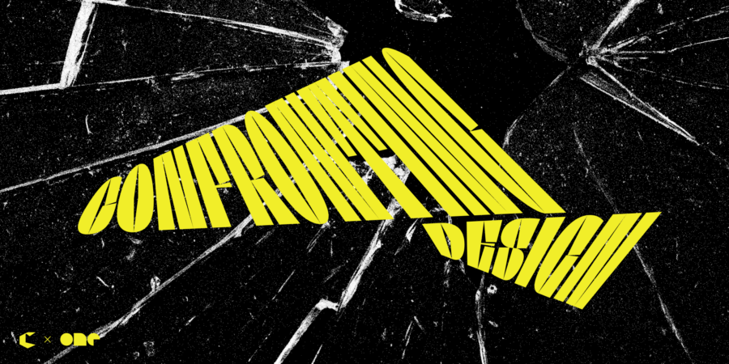

CGDC presents Confronting Danger
The Chicago Graphic Design Club and One Design invite you to attend the third installment of our series, Confronting Design.
In uncertain times, designers have a unique role to play. This year’s Confronting Design explores how we use “Danger”—risk-taking, experimentation, subversive statements, bold ideas—to bring people together, challenge conventions, and push our practice forward.
Rather than a traditional panel, this event centers on small group discussions led by practitioners working outside the mainstream design bubble. Our moderators each bring distinct perspectives on community-building, material exploration, and transforming spaces. Through guided conversation and hands-on activity, we’ll examine what it means to work in the spirit of “Danger” and why that isn’t always negative, it can propel us in new directions.
The evening includes introductions, breakout discussions around themes of Responsibility, Contribution, and Disruption, collaborative exercises, and group sharing. You’ll leave with new connections, fresh perspectives, and practical ideas for challenging norms in your own work.
Location
One Design Company / Two Thirty
230 W Superior, 3rd Floor
Visual identity for event by One Design.